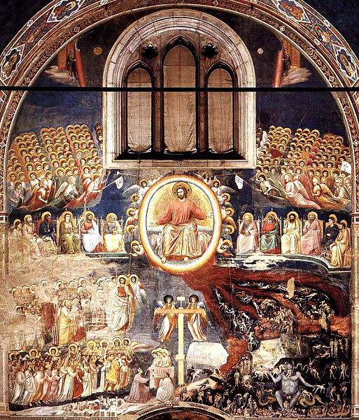

Giotto
Giotto di Bondone, forse diminutivo di Ambrogio, Ambrogiotto o Angiolo, conosciuto semplicemente come Giotto (Colle di Vespignano, 1267 circa – Firenze, 8 gennaio 1337), è stato un pittore e architetto italiano.
Cappella degli Scrovegni
Resta invece intatto il ciclo di affreschi con Storie di Anna e Gioacchino, di Maria, di Gesù, Allegorie dei Vizi e delle Virtù e Il Giudizio Universale della Cappella di Enrico Scrovegni, dipinta tra il 1303 e il 1305. L'intero ciclo è considerato un capolavoro assoluto della storia della pittura e, soprattutto, il metro di paragone per tutte le opere di dubbia attribuzione giottesca, visto che sull'autografia del maestro fiorentino in questo ciclo non ci sono dubbi.
Enrico Scrovegni, ricchissimo banchiere di Padova, acquistò il terreno dell'antica arena romana di Padova il 6 febbraio 1300 e verosimilmente nel 1301 cominciò la costruzione di un sontuoso Palazzo, di cui la cappella era l'oratorio privato, destinato un giorno ad accogliere la tomba sua e di sua moglie. La cappella ebbe una prima consacrazione il 25 marzo 1303. Nel 1304 papa Benedetto XI promulgava un'indulgenza in favore di coloro che avessero visitato la Cappella. L'edificio, completato, fu consacrato il 25 marzo 1305.
Giotto dipinse l'intera superficie con un progetto iconografico e decorativo unitario, ispirato da un teologo agostiniano di raffinata competenza, recentemente identificato da Giuliano Pisani in Alberto da Padova. Tra le fonti utilizzate ci sono molti testi agostiniani, tra cui il De doctrina Christiana, il De libero arbitrio, il De quantitate animae, il De Genesi contra Manicheos, ecc., i Vangeli apocrifi dello Pseudo-Matteo e di Nicodemo, la Legenda Aurea di Jacopo da Varazze e, per piccoli dettagli iconografici, le Meditazioni sulla vita di Gesù dello Pseudo-Bonaventura. Ma anche testi della tradizione medievale cristiana, tra cui Il Fisiologo. Giotto dipinse, dividendolo in 40 scene, un ciclo incentrato sul tema della Salvezza.
Si parte dalla lunetta in alto sull'arco trionfale, dove Dio avvia la riconciliazione con l'uomo, si prosegue sul registro più alto della parete sud con le storie di Gioacchino ed Anna. Si continua sulla parete opposta con le storie di Maria. Si torna sull'arco trionfale con la scena dell'Annunciazione e il riquadro della Visitazione. A questo punto sul secondo registro della parete sud iniziano le storie della vicenda terrena di Gesù, che si svolgono lungo i due registri centrali delle pareti, con un passaggio sull'arco trionfale nel riquadro del Tradimento di Giuda. L'ultimo riquadro presenta la Discesa dello Spirito Santo sugli apostoli (Pentecoste).
Subito sotto inizia il percorso del quarto registro, costituito da quattordici allegorie monocrome, alternate a specchi in finto marmo, che simboleggiano i Vizi e le Virtù: la parete nord presenta le allegorie di sette vizi (Stultitia, Inconstantia, Ira, Iniusticia, Infidelitas, Invidia, Desperatio); lungo la parete sud sono raffigurate le allegorie delle sette virtù, le quattro cardinali (Prudencia, Fortitudo, Temperantia, Iusticia) e le tre teologali (Fides, Karitas, Spes). Vizi e virtù si fronteggiano a coppia e sono ordinati per il raggiungimento del Paradiso, superando con la cura delle virtù corrispondenti gli ostacoli posti dai vizi.
L'ultima scena, che occupa l'intera controfacciata rappresenta il Giudizio universale e la visione del Paradiso. Qui si inquadra la grande novità scoperta da Giuliano Pisani: le figure sotto il trono di Cristo Giudice non rappresentano i simboli dei quattro evangelisti, ma sono rispettivamente, partendo da sinistra, un'orsa con un luccio, un centauro, un'aquila/fenice e un leone, immagini interpretate come riferimento simbolico all'essenza di Cristo. «Orsa e pesce, centauro, aquila e leone sono simboli cristologici che la cultura medievale, specie dopo il Mille, in epoca romanica, riprende dalla più antica tradizione cristiana: rappresentano allegoricamente il battesimo, il dono dell'immortalità, la vittoria sulla morte, la giustizia».
